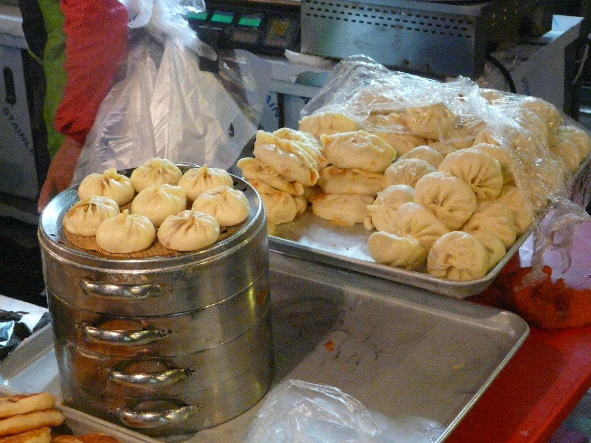

Uzbek labor migration to South Korea: history and the EPS system
The history of Uzbek labor migration to South Korea: from the flawed 1990s Industrial Trainee System to the state-run EPS (Employment Permit System) launched in 2004; the EPS-TOPIK test, the E-9 visa, the numbers and the turning points. Fact-based, sourced history.

Over the past quarter-century South Korea has become a major destination for Uzbek labor migrants. The formation of this migration — from the flawed 1990s Industrial Trainee System to today's state-run EPS — is set out below with specific dates and figures, on the basis of sources. (Note: this article is about modern labor migrants; the ethnic Koreans of Uzbekistan — the Koryo-saram — are a separate, much older phenomenon, briefly distinguished below.)
Origins: the Industrial Trainee System (1990s)
In the early 1990s South Korea introduced the Industrial Trainee System (ITS), bringing in foreign workers as “trainees.” Because migrants were formally trainees, not workers, they fell outside labor-law protection and were paid low wages, especially in the first year. This broker-driven system produced widespread irregularity: by 2002 roughly 80% of the foreign workforce in Korea was undocumented. Uzbek citizens too were sent to Korea under this arrangement, roughly 1995–2007. The system was fully replaced by the EPS by 2007.
The EPS: a state-run system
The legal basis of the EPS — the Act on the Employment of Foreign Workers — was enacted on 16 August 2003, and the system launched on 17 August 2004. The EPS is a government-to-government (bilateral), state-run scheme that eliminated private brokers: recruitment, testing, matching and oversight are run by the Korean government itself. Crucially, workers are classified as workers from day one — not trainees — and are covered by the Labor Standards Act. The system is administered operationally by the Human Resources Development Service of Korea (HRD Korea).
Uzbekistan as an EPS participant
Uzbekistan is one of about 16–17 EPS sending countries (the roster includes Bangladesh, Cambodia, China, Indonesia, Kyrgyzstan, Laos, Mongolia, Myanmar, Nepal, Pakistan, the Philippines, Sri Lanka, Tajikistan, Thailand, Timor-Leste, Uzbekistan and Vietnam). According to sources, Uzbekistan joined the system around 2006–2007; the bilateral EPS memoranda (MOUs) are renewed periodically (for example, a labor MOU dated 13 December 2012 is on record).
EPS-TOPIK and the process
EPS-TOPIK is a Korean-language proficiency test (reading and listening) administered by HRD Korea at authorized centers in the sending country; the baseline pass score is 80 out of 200, but selection is competitive. The process runs: pass EPS-TOPIK (and a skills test) → be placed on the HRD Korea worker roster → Korean employers select workers from the roster (an applicant cannot choose the employer) → issuance of the E-9 (non-professional employment) visa → entry and on-site training. Permitted sectors are manufacturing, agriculture and livestock, fisheries, construction and limited services.
In figures
According to Korean government data, the number of all foreign workers under the EPS rose year after year: 159,463 in 2021, 247,191 in 2023, 271,925 in 2024, 282,839 in 2025, and a record 287,424 as of July 2026. The annual E-9 visa quota rose from 69,000 in 2022 to 165,000 in 2024, then was cut to 80,000 for 2026.
For the Uzbek corridor specifically: the number of Uzbeks hired via the E-9 visa was 4,878 in 2023, falling to 3,080 in 2024 (per kun.uz, attributed to job abandonment and employer bankruptcies). Remittances from Korea to Uzbekistan reached about US$420 million in 2024 — up roughly 76% in a year. (Total remittances to Uzbekistan were about US$14.8–15 billion in 2024, still dominated by Russia.)
Turning points
The sharp rise in quotas in 2022–2024 reflected Korea's labor shortage. In May 2024 Uzbekistan regained access to Korea's seasonal worker program (the E-8 visa) — a program distinct from EPS/E-9 — with agricultural seasonal workers from Tashkent region sent under a 5+3-month scheme (five months, extendable by three). In March 2025 Korea announced training of Uzbek workers for the shipbuilding sector. Uzbekistan–Korea relations were elevated to a “special strategic partnership” in 2019, and further deepened with a 2024 high-level visit.
Koryo-saram: a separate, older diaspora
It is important to distinguish modern labor migrants from the Koryo-saram — the ethnic Koreans of the former USSR. Between 9 September and 3 November 1937, the Soviet NKVD, on Stalin's orders, forcibly deported about 172,000 ethnic Koreans from the Far East to the Kazakh and Uzbek SSRs — the first mass deportation of an entire ethnic group in the USSR. Their descendants still live in Uzbekistan today. In other words, the Koryo-saram are a historical diaspora inside Uzbekistan (from 1937), while modern EPS/E-9 migrants are present-day Uzbek citizens going to Korea to work (from the 2000s).
Worker rights and duration
EPS workers are covered from day one by the Labor Standards Act, the minimum wage and industrial-accident insurance — the key difference from ITS trainees. The employment period is generally up to 4 years and 10 months (an initial 3 years, then an extension of up to 1 year 10 months). A “sincere worker” who met the required conditions may re-enter and work again about three months after returning home. At the same time EPS workers cannot freely change employers (with limited exceptions) — a frequently criticized feature of the system.
Sources
- Center for Global Development — Employment Permit System (EPS)
- The Korea Times — Foreign workers under EPS hit record high (2026)
- kun.uz — South Korea reduces Uzbek migrant intake (Jan 2025)
- Gazeta.uz — Uzbekistan citizens granted renewed access to seasonal work in South Korea (May 2024)
- Wikipedia — Koryo-saram; Deportation of Koreans in the Soviet Union
- Korea Legislation Research Institute — Act on the Employment of Foreign Workers